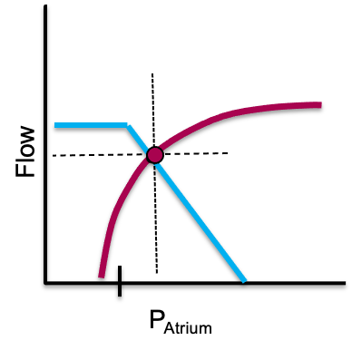
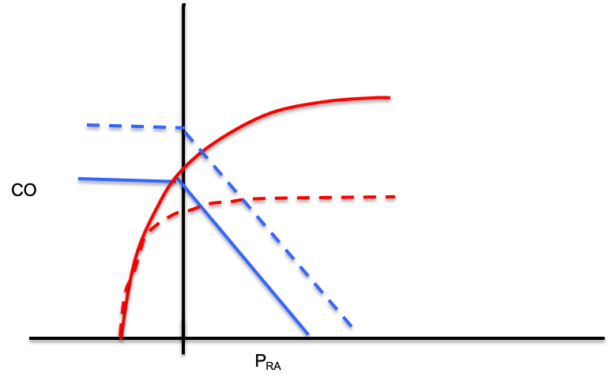

Module N5
The curves, the equation, and the shock-type grid
We left the last module with an understanding that venous return and cardiac output have no choice but to balance over time: venous return must equal cardiac output. The clearest way to demonstrate this balance is to draw both relationships on one pair of axes, with right atrial pressure (RAP) running along the bottom and flow up the side. Plotted this way, venous return and cardiac function run in opposite directions, and the single point where they cross is the patient's cardiac output.

A real source of confusion resolves here. RAP appears on both curves but means opposite things. On the cardiac function curve it is preload, a surrogate for myocyte stretch, so a higher RAP buys more cardiac output. On the venous return curve it is a backpressure opposing venous return, so a higher RAP buys a lower cardiac output.
Where they meet: the operating point
Because what goes in must come out, the patient must live at the one point where the two curves cross. That intersection fixes both the cardiac output and the RAP at once, and it is the payoff of the whole module: every therapy moves one of the curves. A fluid bolus or a vasopressor raises the mean systemic filling pressure (Pms), the average pressure distending the venous reservoir that drives blood back toward the heart, and slides the venous return curve right. An inotrope lifts the cardiac-function curve, and relieving a high afterload does the same. Predict the new crossing before you act, then check whether the patient landed there, and an intervention becomes an experiment with a stated hypothesis.
Preload responsiveness in one picture
This is also the cleanest picture of fluid responsiveness. Giving volume increases Pms and shifts the venous-return curve to the right. If the operating point sits on the steep part of the cardiac-function curve, that rightward shift lands at a meaningfully higher output: the patient is preload responsive and fluid helps. If it sits on the flat part, the same shift buys almost no extra output and only raises filling pressures: the patient is not responsive, and the fluid mostly drives congestion. Every bedside test of responsiveness (the passive leg raise, pulse-pressure variation, an end-expiratory occlusion, or a small measured bolus) is just a way of asking which part of the curve the patient is on before committing to volume.

From the curves to one equation
The same logic generalizes beyond the two curves. Across every interface in the circuit, a simplification of the Hagen-Poiseuille law holds: assuming laminar flow through a tube, the pressure drop across the interface equals its resistance times the flow, and the flow is always the cardiac output.
Pcrit − Pms = Rcapillary × CO
Pms − RAP = VR × CO
mean PAP − LAP = PVR × CO
DO2 = CO × CaO2The venous line (Pms − RAP) is the venous return curve. The arterial line (MAP − Pcrit) is the cardiac function curve reframed. Whichever interface you examine, cardiac output is the common denominator.
From the equation to the grid
Evaluate the measurable variables in those equations and you will realize that each kind of shock leaves a fingerprint. In other words, the shock-type grid that we introduced in the previous module is not a table to memorize, but the readout of the physiology above.
| Shock type | MAP | CO | RAP | PAPm | LAP | SVR |
|---|---|---|---|---|---|---|
| Cardiac (LV) | ↓ | ↓ | ↑ | ↔/↑ | ↑ | ↑ |
| Obstructive (RV) | ↓ | ↓ | ↑ | ↑ | ↔ | ↑ |
| Distributive | ↓ | ↔/↑ | ↓ | ↔ | ↔ | ↓ |
| Hypovolemic | ↓ | ↓ | ↓ | ↔ | ↔ | ↑ |
Take the septic patient as a worked example. Sepsis dilates venules and shifts stressed volume back to unstressed. This causes the venous-return curve to slide left (since Pms falls). Further, vasodilation causes the venous resistance to fall. This causes an increase in the slope of the venous return curve. The ensuing catecholamine response lifts the cardiac-function curve.

The grid simply records the physiologic endpoints demonstrated here: a low RAP with a preserved or high CO. Using the grid allows you to choose a parameter that best discriminates one physiologic hypothesis from its rivals. A low RAP narrows the field to distributive or hypovolemic. The cardiac output does more, distinguishing distributive shock from all the others at once. Because you understand where each number comes from, you can also see the grid's limits, for instance a patient whose RAP is low will not easily differentiate hypovolemic from distributive shock.
With the physiology and the grid in hand, we can finally turn them into a repeatable bedside method.
References
- Guyton AC. Determination of cardiac output by equating venous return curves with cardiac response curves. Physiol Rev. 1955;35(1):123-129. doi:10.1152/physrev.1955.35.1.123.
- Patterson SW, Starling EH. On the mechanical factors which determine the output of the ventricles. J Physiol. 1914;48(5):357-79. doi:10.1113/jphysiol.1914.sp001669. Free full text.
- Sylvester JT, Goldberg HS, Permutt S. The role of the vasculature in the regulation of cardiac output. Clin Chest Med. 1983;4(2):111-26.
- Funk DJ, Jacobsohn E, Kumar A. The role of venous return in critical illness and shock, part I: physiology. Crit Care Med. 2013;41(1):255-262. doi:10.1097/CCM.0b013e3182772ab6.
- Jacob R, Dierberger B, Kissling G. Functional significance of the Frank-Starling mechanism under physiological and pathophysiological conditions. Eur Heart J. 1992;13 Suppl E:7-14. doi:10.1093/eurheartj/13.suppl_e.7.
- Schipke JD, Heusch G, Sanii AP, Gams E, Winter J. Static filling pressure in patients during induced ventricular fibrillation. Am J Physiol Heart Circ Physiol. 2003;285(6):H2510-5. doi:10.1152/ajpheart.00604.2003.
- Rola P, Kattan E, Siuba MT, et al. Point of View: A Holistic Four-Interface Conceptual Model for Personalizing Shock Resuscitation. J Pers Med. 2025;15(5):207. doi:10.3390/jpm15050207. Free full text.